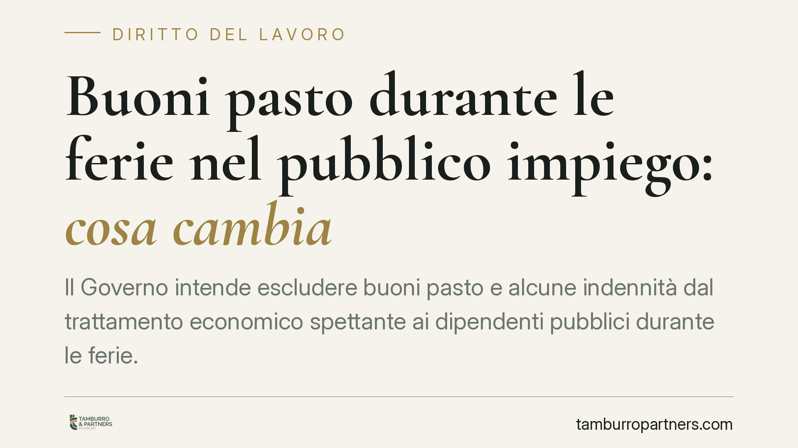

Buoni pasto durante le ferie nel pubblico impiego: cosa cambia
Il Governo intende escludere buoni pasto e alcune indennità dal trattamento economico spettante ai dipendenti pubblici durante le ferie. La misura risponde a una serie di pronunce che, sulla scia del diritto dell'Unione, avevano riconosciuto anche tali voci nel periodo feriale. In gioco c'è la nozione stessa di retribuzione dovuta durante il riposo annuale.

Il contesto
Negli ultimi anni diversi tribunali del lavoro hanno riconosciuto ad alcuni dipendenti pubblici il diritto a vedersi corrisposte, durante le ferie, non soltanto la retribuzione base ma anche talune voci accessorie. Fra queste, in casi specifici, sono stati inclusi i buoni pasto e determinate indennità.
Secondo le stime riportate dagli organi di stampa, l'estensione generalizzata di questo orientamento comporterebbe un onere per la finanza pubblica dell'ordine di alcuni miliardi di euro. Il dato non risulta ancora consolidato in una relazione tecnica ufficiale pubblicata e va quindi assunto con cautela.
È importante una precisazione di metodo: al momento in cui scriviamo, la misura è annunciata come intervento normativo in itinere. Non risultano ancora reperibili gli estremi definitivi del provvedimento (numero, anno, articolo) né la sua pubblicazione in Gazzetta Ufficiale. L'analisi che segue riguarda quindi il quadro giuridico entro cui l'intervento si colloca, non un testo già vigente.
Inquadramento normativo
Il riferimento europeo è l'art. 7 della Direttiva 2003/88/CE, che garantisce a ogni lavoratore un periodo di ferie annuali retribuite di almeno quattro settimane.
La Corte di giustizia dell'Unione europea ha chiarito che durante le ferie il lavoratore deve percepire la "retribuzione ordinaria", cioè quella che riceverebbe se stesse lavorando. Nella sentenza *Williams e a.* (C-155/10) la Corte ha affermato che rientrano nel trattamento feriale gli emolumenti "intrinsecamente collegati" all'esecuzione delle mansioni previste dal contratto. Nella sentenza *Lock* (C-539/12) ha esteso il ragionamento a componenti variabili, come le provvigioni, quando risultino stabilmente connesse all'attività svolta.
Il crinale interpretativo è netto: vanno computati nel trattamento feriale gli elementi intrinsecamente legati alle mansioni; restano invece esclusi quelli meramente accessori o occasionali, destinati a coprire costi o eventi che durante le ferie non si verificano.
Buono pasto: accessorio o componente stabile?
Proprio qui si concentra il nodo. Il buono pasto ha natura tipicamente accessoria: è collegato all'effettiva presenza in servizio e alla ricorrenza della pausa pranzo durante l'orario di lavoro. In quest'ottica, la sua esclusione nel periodo feriale appare coerente con l'impostazione della CGUE, perché durante le ferie manca il presupposto (la prestazione lavorativa con obbligo di permanenza) che lo giustifica.
L'orientamento non è però stato uniforme: alcune pronunce di merito hanno valorizzato la componente retributiva del buono, riconoscendolo anche in ferie. È questa disomogeneità che l'intervento governativo mira a chiudere, modificando la disciplina rimessa ai contratti collettivi nazionali di lavoro (CCNL) di comparto.
Implicazioni pratiche
Per il dipendente pubblico il tema si traduce in una possibile differenza retributiva relativa ai periodi di ferie già fruiti. La rilevanza concreta dipende da tre variabili: il comparto di appartenenza, il CCNL applicabile e la natura effettiva delle voci percepite.
Per le amministrazioni, l'intervento punta a prevenire un contenzioso seriale e a stabilizzare i conti. Ma resta il tema dei rapporti già maturati e delle eventuali domande già proposte prima dell'entrata in vigore della nuova disciplina, che dovranno essere valutate secondo il diritto vigente al momento dei fatti.
Un punto merita attenzione: eventuali crediti retributivi sono soggetti a prescrizione. La verifica dei termini applicabili al singolo rapporto è dirimente per stabilire se, e in che misura, un diritto sia ancora azionabile.
Cosa fare in concreto
- Verifica il tuo CCNL di comparto: individua come sono qualificate le voci percepite (buono pasto, indennità) e se il contratto ne prevede la corresponsione in ferie.
- Recupera e conserva i cedolini: controlla se le voci accessorie compaiono nei periodi di ferie e in quali importi.
- Ricostruisci i periodi feriali degli ultimi anni per delimitare l'eventuale differenza retributiva rilevante.
- Considera i termini di prescrizione: verifica la data di maturazione delle singole voci per capire cosa sia ancora esigibile.
- La valutazione delle differenze retributive richiede l'analisi della singola posizione e del comparto di appartenenza.
Disclaimer
Contributo informativo a cura di Tamburro & Partners Avvocati - Avv. Giuseppe Tamburro. Non costituisce parere legale.
Ogni storia di lavoro ha i suoi tempi.
Se gestisci HR e vuoi un confronto su contenzioso, ispezioni o licenziamenti, scrivi allo studio. Ti rispondiamo entro un giorno lavorativo.